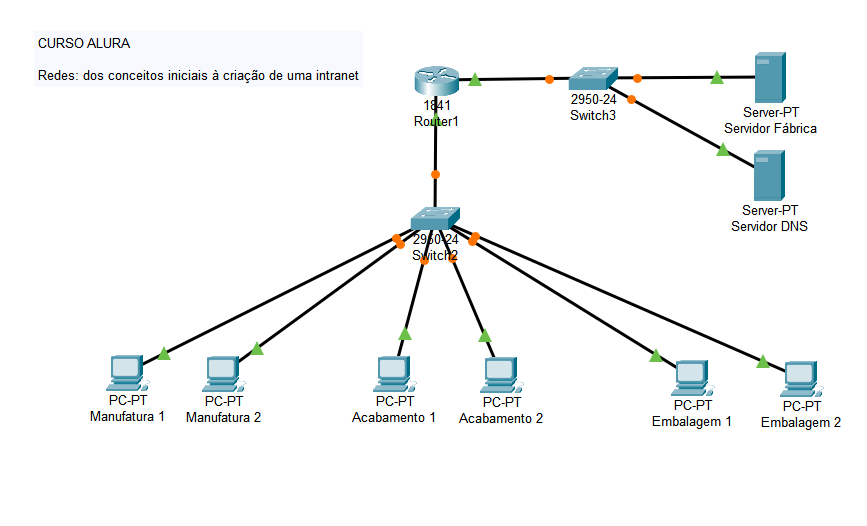
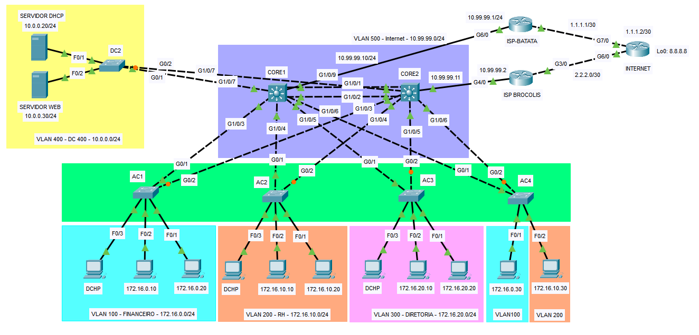

Projetos
Redes simuladas no Cisco Packet Tracer, cada uma com README no repositório.

Projeto acadêmico
Intranet industrial com VLANs e serviços básicos
Infraestrutura de rede para uma fábrica, feita no curso da Alura. Estações de Manufatura, Acabamento e Embalagem se conectam por switches 2950-24 a um roteador 1841, com servidor DNS para resolução interna e servidor de fábrica para as aplicações industriais.
Packet Tracer VLANs DNS Switches 2950-24
Ver projeto no GitHub

Projeto pessoal
Topologia corporativa com HSRP, VLANs e redundância
Rede corporativa com dois switches de core em HSRP, quatro switches de acesso, VLANs de Financeiro, RH e Diretoria, servidores DHCP e Web em um data center e saída para a Internet por dois provedores com failover. Usa STP, NAT e ACLs.
Packet Tracer HSRP STP DHCP NAT ACLs
Ver projeto no GitHub